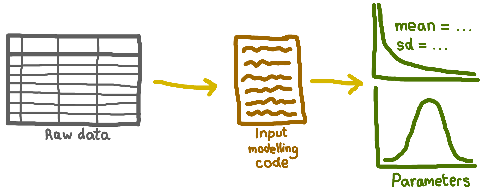

Input data management
Your reproducible analytical pipeline (RAP) should start from the earliest data you access - either with raw data (if you estimate parameters yourself) or with pre-defined parameters (if those are supplied). This ensures that every step in your process is transparent and reproducible. For example, if you obtain updated raw data, you would be able to re-estimate parameters, check that your chosen distributions are still appropriate, and re-run the simulation.
External sharing of the full RAP may not always be possible. In healthcare simulations, the raw data may be sensitive or identifiable, and so cannot be shared due to privacy or ethical concerns. However, mainintaing a complete RAP internally is still essential for your team or organisation to ensure that the process is fully reproducible.
There are a few key files to consider for your RAP:
- Raw data
- Input modelling code
- Parameters

Raw data
This is data which reflects system you will be simulating. It is used to estimate parameters and fit distributions for your simulation model. For example:
| ARRIVAL_DATE | ARRIVAL_TIME | SERVICE_DATE | SERVICE_TIME | DEPARTURE_DATE | DEPARTURE_TIME |
|---|---|---|---|---|---|
| 2025-01-01 | 0001 | 2025-01-01 | 0007 | 2025-01-01 | 0012 |
| 2025-01-01 | 0002 | 2025-01-01 | 0004 | 2025-01-01 | 0007 |
| 2025-01-01 | 0003 | 2025-01-01 | 0010 | 2025-01-01 | 0030 |
| 2025-01-01 | 0007 | 2025-01-01 | 0014 | 2025-01-01 | 0022 |
Internal management of raw data
You should either keep copies of the raw data or, if the data is in a secure database or very large, and cannot be exported, clearly describe how to access it (including the database location, access permissions, and navigation instructions).
For both options, you should also document when you obtained the data, and relevant metadata (e.g. time period the data covers, number of records, any known issues or missing data). For example:
“Data sourced from the XYZ database. Copies are available in this repository, or, to access directly, log in to the XYZ database and navigate to [path/to/data]. Data covers January 2012 to December 2017, with [number] records. Note: [details on missing data, known issues, etc.]. A copy of the data dictionary is available in the repository or online at [URL].”
You should keep a copy of the data dictionary. A data dictionary describes each field, its format, units, and any coding schemes used. If one is not provided for your data, then you should create your own, to ensure the raw data used for your simulation is clear and understandable. For example:
| Field | Field name | Format | Description |
|---|---|---|---|
| ARRIVAL_DATE | CLINIC ARRIVAL DATE | Date(CCYY-MM-DD) | The date on which the patient arrived at the clinic |
| ARRIVAL_TIME | CLINIC ARRIVAL TIME | Time(HH:MM) | The time at which the patient arrived at the clinic |
| DEPARTURE_DATE | CLINIC DEPARTURE DATE | Date(CCYY-MM-DD) | The date on which the patient left the clinic |
| DEPARTURE_TIME | CLINIC DEPARTURE TIME | Time(HH:MM) | The time at which the patient left the clinic |
| SERVICE_DATE | NURSE SERVICE START DATE | Date(CCYY-MM-DD) | The date on which the nurse consultation began |
| SERVICE_TIME | NURSE SERVICE START TIME | Time(HH:MM) | The time at which the nurse consultation began |
Input modelling code
This code (e.g. ?@sec-input_modelling) is often not shared, but is an essential part of your simulation RAP. It ensures transparency in how distributions were chosen and allows you (or others) to re-run the process if new data becomes available or if you need to update your assumptions.
If you are able to share this code externally:
- ☑️ Include it in your repository alongside your simulation code and scripts.
If you cannot share this code:
☑️ Internally, store the code securely, ideally with version control. For example, if possible, within a private GitHub repository.
☑️ Externally, document the input modelling process you followed.
☑️ Externally, describe the reasons for not sharing (e.g. code contains sensitive logic).
Parameters
Parameters are the numerical values used in your model, like the arrival rates, service times or probabilities.
Internal management of parameters
You should keep clearly structured parameter files that record all values used in your model. This could be:
- A CSV file (e.g. ?@sec-param_file).
- A script (e.g. ?@sec-param_script).
For each parameter, keep documentation (e.g. data dictionary, docstrings). Ensure you document:
- The parameter name and value.
- Units (e.g. minutes).
- Any abbreviations used.
If the determination of parameters is not captured within any scripts from ?@sec-input_modelling, then you should either:
- Provide scripts which calculate them, or
- Describe the processing steps if these cannot be shared.
If the parameters were not calculated by you, but provided by someone else, clearly state the source and describe any processing or transformation steps you know about.
Maintaining a private and public version of your model
It is likely that you may have some data and/or code that you need to keep private, and cannot share along with the simulation model. It’s important that both the private and public components are version controlled (?@sec-version). One way of managing this is to have two separate repositories: a private repository and a public repository.
If the public repository contains the real parameters and results, it’s quite simple: use the private repository for processing input data, then switch to the public repository for running the model.
If the public repository only contains synthetic parameters, you’ll need to be able to run the simulation in the private repository with the real parameters and results, and also in the public repository with the synthetic parameters and results. To avoid duplicating the simulation code across both repositories, a good strategy is to develop your simulation code as a package (?@sec-package). This package can be published on GitHub, PyPI, or simply installed locally. Your private repository can then import and use this package, allowing you to maintain a single version of the simulation code while keeping sensitive parameters and data private.
Further information
https://journals.sagepub.com/doi/full/10.1177/2515245920928007
https://help.osf.io/article/217-how-to-make-a-data-dictionary